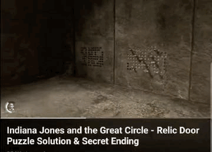

Choose a puzzle to play:
there are solutions to solve them with a minumim of 11, 11, 13, and 14 pegs for puzzle 1-4
i did not make these - they are simplified copies from a great videogame!

The goal is to fill all the initially black holes on the board with as few pegs as possible
Click on a black hole to place a new peg.
If there is a yellow border around a peg then that is the current active peg.
Click the "Left" button to fill in any 8 immediately surrounding holes
Click the "Right" button to fill all empty holes in the same row and column until a blank space (red dot indicates right twist)
Click on an already active peg (yellow border) again to remove it, which will also revert any holes it filled.
The big challenge is to complete each puzzle with the minimum number of pegs!
Enjoy!